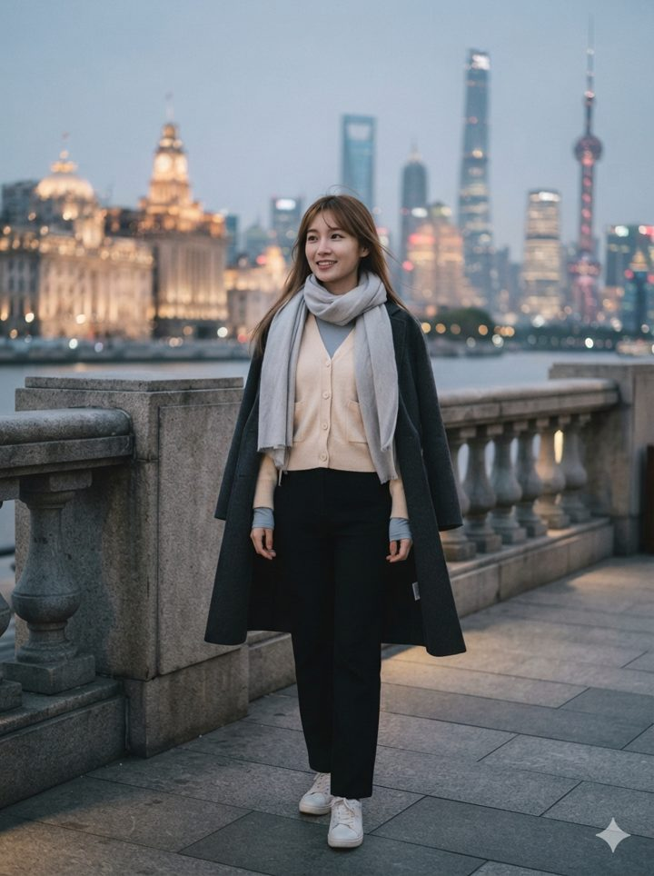

← 返回行程
Shanghai · Suzhou · Wuzhen · Hangzhou · March OOTD
上海苏州乌镇杭州 九日穿搭
女生 170 cm · 3/8–3/16 · 早晚凉、多细雨 · 拍照出片 —— 按往年气候估计，不是预报，出发前一周再看实际天气
01
抵达浦东 · 川沙古镇
3/8 · MH388 抵达，下午逛古镇 · 驼色牛仔蓝 · 8–14℃
刚落地先用大衣挡一下潮冷，古镇的灰瓦、红灯笼和驼色最搭。
02
静安寺 · 宫宴汉服 · 陆家嘴 · 外滩夜景
3/9 · 06:30 出门，22:45 到酒店 · 浅杏灰蓝黑 · 6–13℃

白天到夜晚 · 外滩宫宴 · 汉服妆造
早上和夜里的温差最大，围巾和外套要随身带；宫宴换装时选浅色系的汉服，和杏色开衫一样柔和。
03
上海迪士尼
3/10 · 07:20 出门，22:20 班车回 · 奶油白浅蓝 · 8–15℃
外套
浅蓝轻薄羽绒背心，早晚冷就套上，热了脱下放包里
背心比外套方便，排队时冷、玩项目时热；雨披放在包里，下雨时不用买贵的。
04
上海 → 苏州 · 虎丘 · 七里山塘
3/11 · 07:30 出发，20:30 回 · 墨绿燕麦米白 · 7–15℃
山塘街的白墙黑瓦配墨绿和米白最安静；坐船和过桥时风大，围巾别省。
05
拙政园 · 平江路 · 金鸡湖
3/12 · 09:00 出门，21:30 回 · 苔绿雾粉奶油 · 6–15℃
园林里的绿、粉和木色最好拍；裙子里面一定穿保暖打底，傍晚的湖边还要加披肩。
06
苏州 → 乌镇 · 西栅 · 汉服
3/13 · 08:30 出发，20:30 回 · 浅蓝奶白 · 5–14℃
水乡的黑瓦、红灯笼和浅蓝奶白最出片；汉服里面穿保暖贴身衣，披肩晚上是救命稿，19:30 回店归还前别弄脏。
07
乌镇 → 杭州 · 河坊街 · 西湖 · 武林夜市
3/14 · 06:50 出门，21:30 回 · 雾蓝白深灰 · 7–16℃
杭州比乌镇暖一点，白天一件风衣够；晚上去武林夜市吃小吃，深色裤子不显油。
08
法喜寺 · 灵隐寺 · 西湖 · 湖滨
3/15 · 06:20 出门，21:30 回 · 米色深灰蓝墨绿 · 6–15℃
寺庙和山路要走很多石阶，遮肩长袖长裤 + 防滑鞋最合适；早上山里比市区低几度，别只穿薄外套。
09
杭州 → 浦东机场 → 回吉隆坡
3/16 · 09:00 出发，15:25 起飞 · 燕麦浅灰驼色 · 8–17℃
外套
驼色薄风衣，不冷时搭在手臂，落地吉隆坡前收进手提
这天要坐地铁、高铁、机场线，换乘多；吉隆坡是热带，下飞机前把长袖脱掉，多带一双干袜子。
打包建议
- 鞋只带 2 双：① 白色或米色厚底运动鞋（第 1、2、3、5、7、9 天，逛街和排队都舒服）；② 防滑徒步运动鞋或带皮边的运动鞋（第 4、8 天，虎丘的石阶、灵隐寺的青苔路）
- 大衣和风衣：驼色长款大衣（第 1 天）、炭灰薄呢大衣（第 2 天）、驼色薄风衣（第 9 天）、雾蓝薄风衣（第 7 天），按当天天气选
- 轻薄外套：浅蓝羽绒背心（第 3 天）、墨绿防风夹克（第 4 天）、墨绿冲锋衣（第 8 天），热了脱下放包里
- 围巾和披肩：浅灰围巾（第 2 天）、米色围巾（第 4 天）、灰色披肩（第 5 天）、奶白羊毛披肩（第 6 天，汉服时用），每天都带一条，早晚温差大
- 裙装：第 5 天雾粉百褶裙，里面一定穿保暖打底裤；汉服在第 2、6 天，里面穿保暖贴身衣
- 雨具：一次性雨披或折叠伞，3 月华东多细雨，迪士尼和西湖都用得上
- 长裤 4 条：直筒牛仔裤、黑色高腰直筒裤、米白直筒裤、深灰蓝直筒裤；薄毛衣和长袖打底各带 3–4 件，叠穿不显臃肿
- 第 8 天去寺庙，肩膀手臂和腿都要遮住，不穿短裤、吊带
按女生 170 cm 的身材写，外套长度和裤型是通用的比例建议，随个人腿长和肩宽微调；气温是按往年 3 月上中旬估的，不是预报，出发前一周再看各城市实际天气；每天的人物图是 AI 生成的示意图，不是实拍；第 6 天汉服是在乌镇半城红妆店租的，实际款式以店里为准。